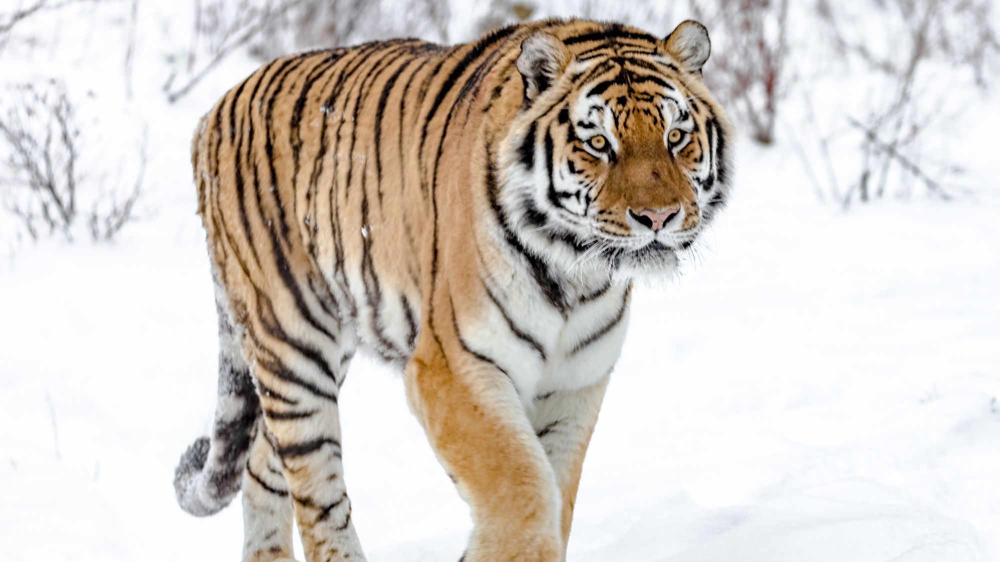
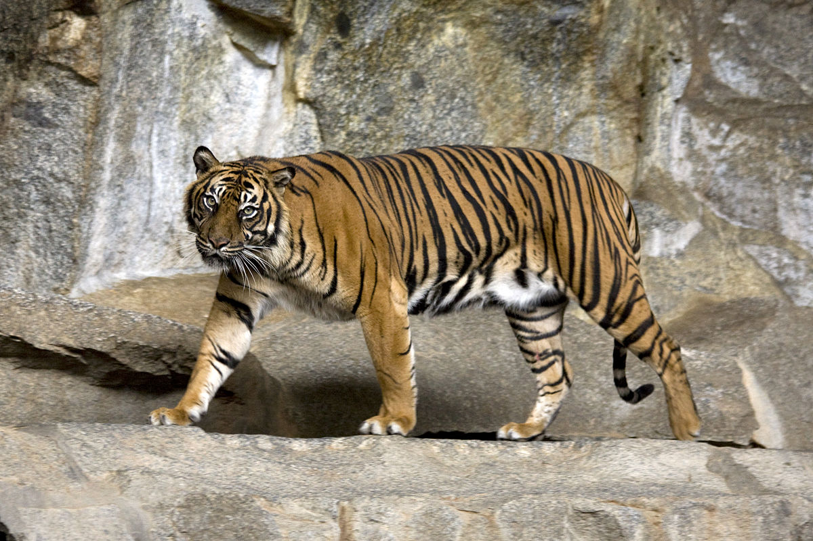
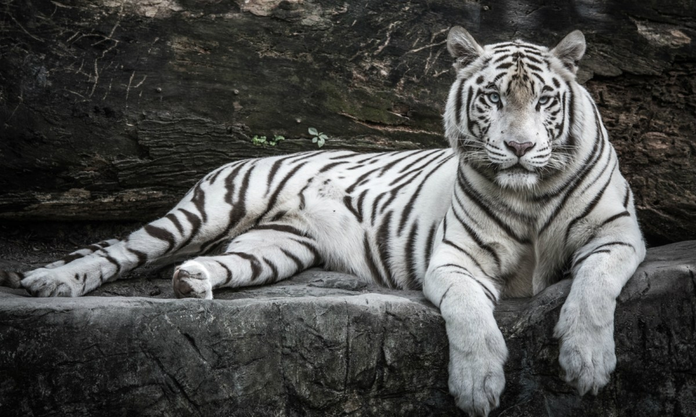

Bengal Tiger
The Bengal tiger is a tiger from a specific population of the Panthera tigris tigris subspecies that is native to the Indian subcontinent. It is threatened by poaching, loss, and fragmentation of habitat, and was estimated at comprising fewer than 2,500 wild individuals by 2011. None of the Tiger Conservation Landscapes within its range is considered large enough to support an effective population of more than 250 adult individuals. India's tiger population was estimated at 1,706–1,909 individuals in 2010. By 2018, the population had increased to an estimated 2,603–3,346 individuals. Around 300–500 tigers are estimated in Bangladesh, 220–274 tigers in Nepal and 103 tigers in Bhutan.

Siberian Tiger
The Siberian tiger is a tiger from a specific population of the Panthera tigris tigris subspecies native to the Russian Far East, Northeast China, and possibly North Korea. It once ranged throughout the Korean Peninsula, north China, and eastern Mongolia. Today, this population inhabits mainly the Sikhote-Alin mountain region in southwest Primorye Province in the Russian Far East.

Sumatran Tiger
The Sumatran tiger is a population of Panthera tigris sondaica on the Indonesian island of Sumatra. This population was listed as Critically Endangered on the IUCN Red List in 2008, as it was estimated at 441 to 679 individuals, with no subpopulation larger than 50 individuals and a declining trend. The Sumatran tiger is the only surviving tiger population in the Sunda Islands, where the Bali and Javan tigers are extinct. Sequences from complete mitochondrial genes of 34 tigers support the hypothesis that Sumatran tigers are diagnostically distinct from mainland subspecies.

White Tiger
The white tiger or bleached tiger is a leucistic pigmentation variant of the Bengal tigers, Siberian Tiger and man-made hybrids between the two, which is reported in the wild from time to time in the Indian states of Madhya Pradesh, Assam, West Bengal, Bihar and Odisha in the Sunderbans region and especially in the former State of Rewa. Such a tiger has the black stripes typical of the Bengal tiger, but carries a white or near-white coat.